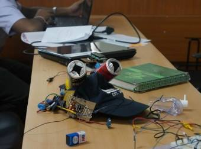
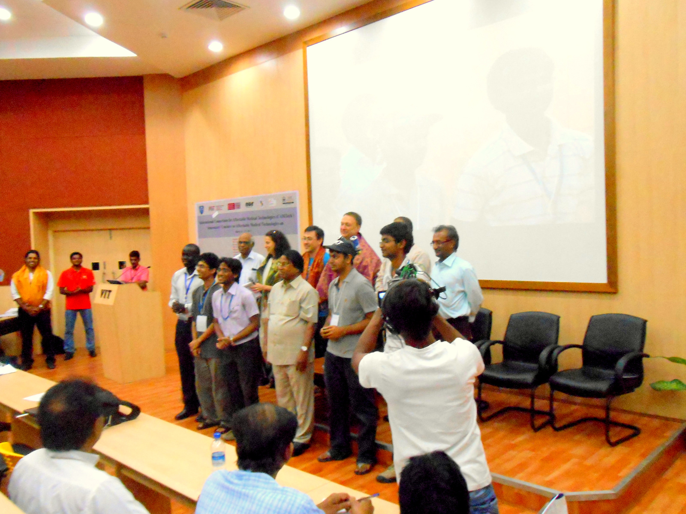
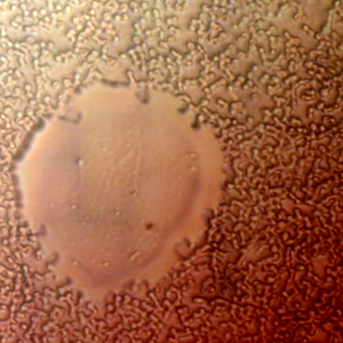
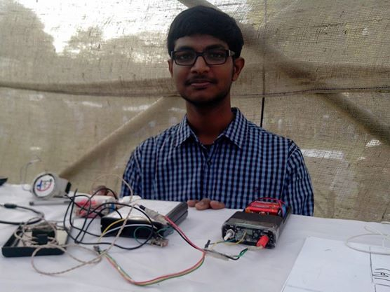
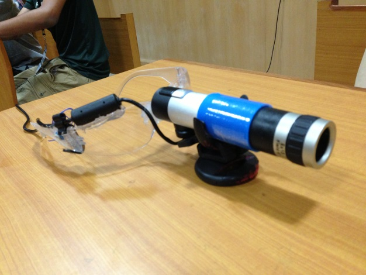
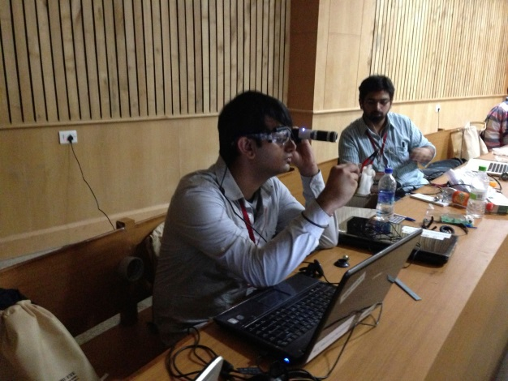

Home
Current Research
Resume
People and travel
* Projects
Creation Labs
Software & Tutorials
http://i4d.mit.edu/
Sponsors
 |
Projects driven towards positive social impactI love to decipher and debug |
Oxygen Mask With Mic
Some problems in healthcare which seem obvious are apparently so obvious that they are overlooked!
Problem Description
One such issue is the difficulty that a patient experiences while communicating when he is on oxygen supply through an oxygen mask. This project was developed as a part of the Conclave for Innovative Medical Technologies organized by the Consortium of Affordable Medical Technologies of the Massachusetts General Hospital. The idea was to develop an affordable, simple and a non-invasive way of addressing this problem statement.
Within the next 24 hours, we were able to come up with a solution which was amazingly simple yet effective! What we had done, was effectively pick-up the vibration from the diaphragm of the mask using a piezo and amplify it. The amplified signals were then transmitted to the soda can speakers which were integrated with the MIT cap that we received during the pitch session at the start of the conclave.
|  |
| Oxygen Mask. |
Awards
With our creation and our business plan, we were awarded the first prize at the conclave and were covered by some of the major newspapers across the country.
Team
| Team Members |
|---|
| Krishna Prasad V.S., Rajat Mishra, Karthik Paga, Akshat Wahi, Dr. Data Santarino, Dr. Ted Moallem |
|  |
| Our Team. |
Links : The Hindu | Deccan Chronicle | Prepsure.com
Low cost digital microscope
wiht fully automated stage, serves the basic purpose of digital microscope.A cropped section of image (real image = 6* cropped image) is observed to have high image clarity (14Mpx). 
Affordable Audio Tactile Speech aids for the deaf and hearing impaired
Mentor: Dr. Theodre M.Moallem, MIT-Harvard HST program
Innovation Centre (http://i4d.mit.edu/audio-tactile-speech-aids) 
E.Y.E. (Enhanced The Eye)
Mentoring team: MIT Media Lab Camera Culture group
[Summary of work.pdf]What?
It is essentially an assistive device for the low visioned people (targeting specifically schoolgoing children and university students). Its structure is like that of a regular safety glass with a camera fixed in the middle and a beam splitter glass mounted in front of it to act as a screen. The camera takes in the live feed of the surroundings which is displayed on a laptop screen and is then transferred to an android device by remote access feature. The user can zoom in and out of feed by rotating a knob present on the arm of the glasses. Also, other video parameters such as brightness, contrast, exposure etc can be varied.
Why?
Low vision patients have few options to read at distance. The available devices are annoying, unaesthetic, heavy and expensive, relying in complex optics mounted on the spectacles or hand helded (what keeps them away from writing at the same time as reading).
Potential impact
This device meets the need of 246 million people suffering from low vision for a low cost device to enhance their vision. Huge market scope.  
Created 26 October 2014.
Last updated 16 December 2014.
Created and maintained by Karthik Paga.